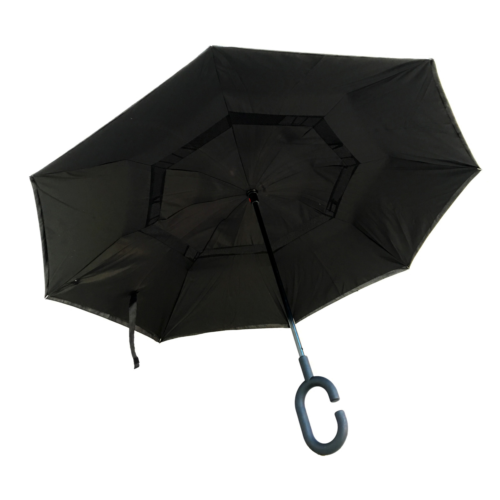
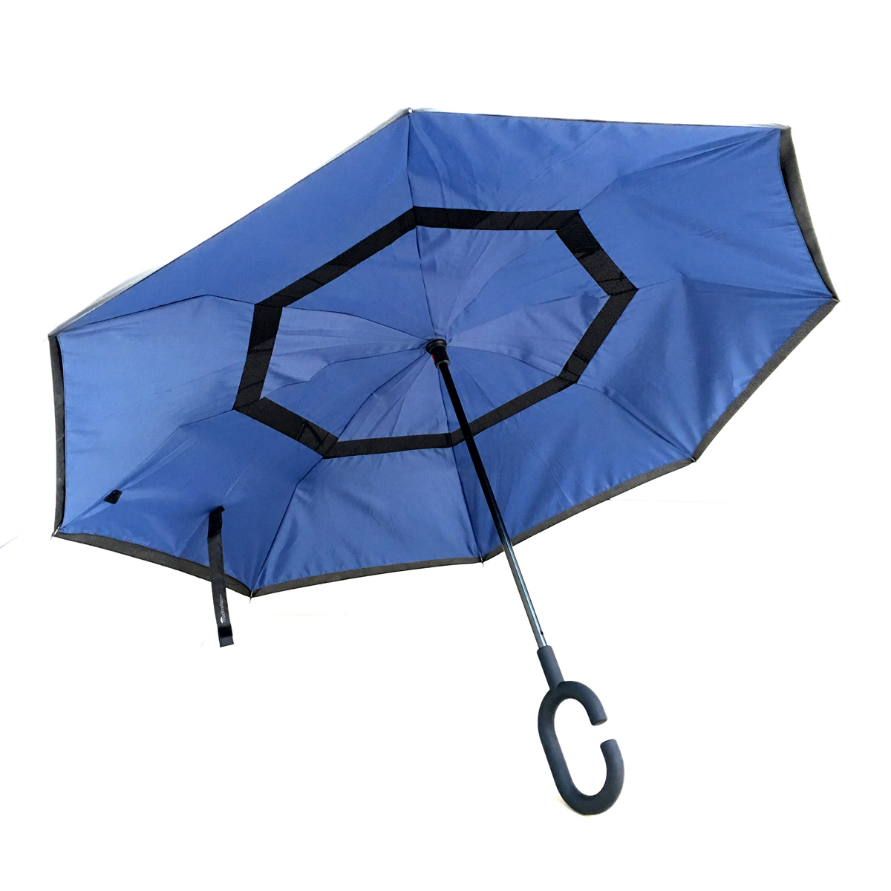
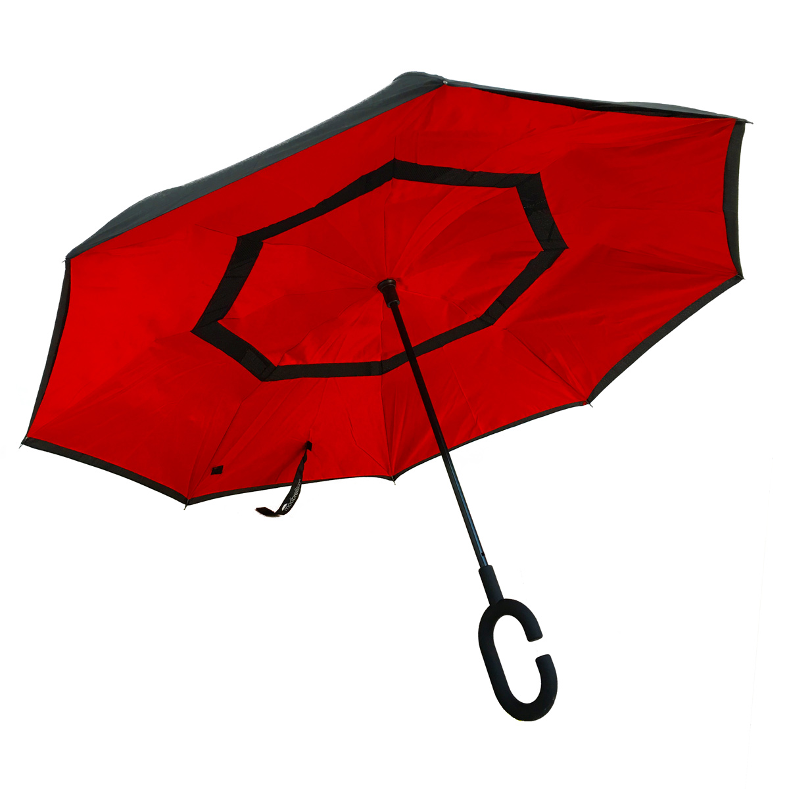

Our Modbrella Line Up
Black

Blue

Red

Features
-
Innovative, inverted design prevents dripping and friendly to crowded spaces
-
Double layered canopy with mesh inserts prevents flipping
-
Metal shaft and carbon fibre ribs are lightweight and durable
-
C-shaped padded handle allows for comfortable, hands-free use
-
Easy, manual open and close with button lock